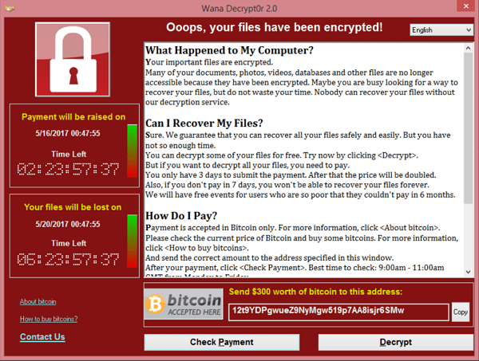

Wanna Cry
Oops your files have been Encrypted!
-- by Ransomware
What is Ransomware?
Ransomware is a type of malicious software that infects a computer and restricts users’ access to it until a ransom is paid to unlock it. Ransomware variants have been observed for several years and often attempt to extort money from victims by displaying an on-screen alert. It is one of the attacks that hacker use to steal money or to full fill other demands and by which cooperates and other organization has threat 24*7.
What was WannaCry Ransomware?

Imagine you are working for a cooperate / organization and suddenly your screen shows up a pop up saying “Your all files have been encrypted and in-order to decrypt it you have to pay me”, that’s likely to be a Ransomware. According to studies cooperate pays Millions of Dollars every year to this kind of attacks rather then paying some money to White hoodie hacker like us and fix Vulnerabilities.
Attack
The WannaCry ransomware consists of multiple components. It arrives on the infected computer in the form of a dropper, a self-contained program that extracts the other application components embedded within itself.
Those components include:
- An application that encrypts and decrypts data
- Files containing encryption keys
- A copy of Tor
The program code is not obfuscated and was relatively easy for security pros to analyze. Once launched, WannaCry tries to access a hard-coded URL (the so-called kill switch); if it can’t, it proceeds to search for and encrypt files in a slew of important formats, ranging from Microsoft Office files to MP3s and MKVs, leaving them inaccessible to the user. It then displays a ransom notice, as above, demanding $300 in Bitcoin to decrypt the files.
The Saviour
Who is Marcus Hutchins?
In May 2017, a young hacker who goes by the sobriquet MalwareTech singlehandedly saved the world from the devastating WannaCry ransomware outbreak. He found what he say ‘kill switch’ by which he was able to decrypt the encrypted files without paying hackers a penny. Question comes, how was he able to do that? Marcus Hutchins aka MalwareTech in his past used to work with Black Hat hackers (Bad Hackers) and help them create such Malware, Ransomware, etc due to this experience he was able to Decode the Ransom and Save the world as Hero!!
After this hack, Marcus became hero to the world overnight but also became target to cops, they found his past and arrested him. Altho, due to his good work on solving WannaCry, Marcus was set free form his past mistakes 🙂
Being at good side is the only way to Live safe and help others, but if Marcus didn’t had that experience then Could he has ever found the ‘Kill Switch’? 😉
Thank you giving your time and reading my blog, if you liked it tell me in comment section below and see you in the next t blog till that have a good day babye!!
© hackkeencyber